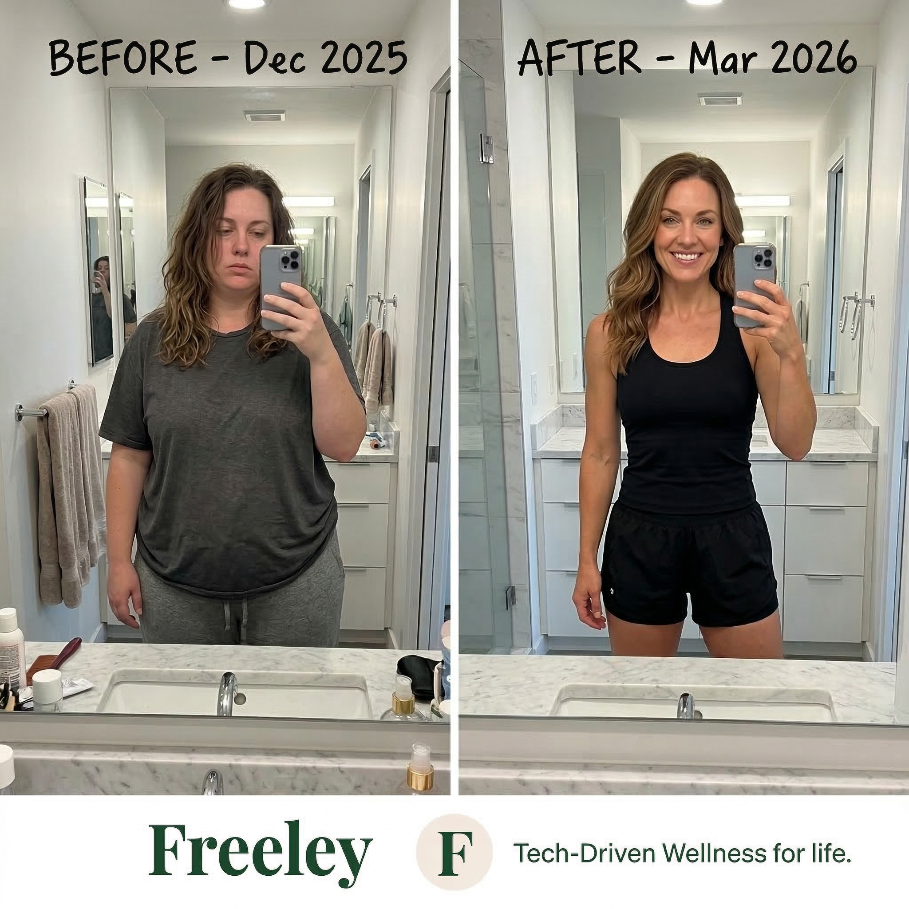

With GLP-1 medications dominating the weight loss conversation, many patients are turning to Semaglutide (the active ingredient in Ozempic and Wegovy) to hit their goals. But when comparing the cost of compounded semaglutide vs brand name Ozempic, the difference in out-of-pocket expenses can be staggering.
Here’s our deep dive into the costs, accessibility, and overall value of each option.

The Price Tag: Brand Name Ozempic
Ozempic is an FDA-approved medication primarily used to improve blood sugar control in adults with type 2 diabetes. While incredibly effective, it comes with a high price tag.
If your insurance does not cover it (which is increasingly common if you do not have a Type 2 Diabetes diagnosis), the out-of-pocket retail cost for an Ozempic pen typically ranges from $900 to $1,200 per month. Over the course of a year, that equates to a massive financial commitment.
The Alternative: Compounded Semaglutide
Compounded semaglutide is prepared by an FDA-registered 503A or 503B compounding pharmacy. Compounding allows licensed pharmacists to prepare medications tailor-made to a prescription, often mixing the active GLP-1 peptide with beneficial additions like Vitamin B12.
Because patients aren't paying the premium for the brand name, auto-injector pens, and massive pharma advertising budgets, compounded semaglutide is dramatically more affordable. Programs like Freeley offer everything—medication, tele-health consults, and shipments—for a fraction of the cost, typically ranging from $190 to $300 a month depending on the dosage.

Frequently Asked Questions
Is compounded Semaglutide the same as Ozempic?
Compounded semaglutide uses the exact same active pharmaceutical ingredient as Ozempic. However, compounded medications are custom-made by specialized pharmacies rather than mass-produced by Novo Nordisk, meaning the final product is not individually FDA-approved.
Does insurance cover compounded medications?
In most cases, health insurance providers do not cover compounded weight loss medications. For many, paying the lower cash price for a compounded version is still much cheaper than paying the retail cash price for the brand-name.
Are there hidden fees?
With Freeley, your monthly cost includes your physician consultation, unlimited message support, and your medication shipped to your door. There are no surprise pharmacy copays.
The Verdict
Choosing between compounded semaglutide and brand name Ozempic primarily comes down to insurance coverage and budget. If you have excellent insurance coverage that makes Ozempic affordable, it's an incredible option. If you are paying out of pocket, compounded medications offer a clinically sound, cost-effective alternative.
Ready to start your journey?
Consult directly with a licensed physician to find the right treatment path for you.
Complete Free Assessment →